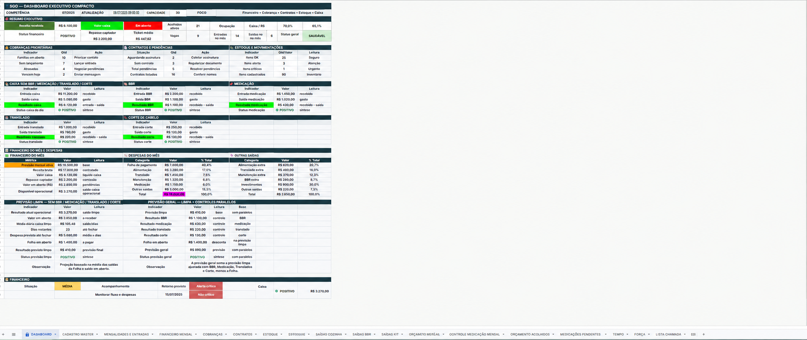

Dados centralizados
Informações organizadas para facilitar o acompanhamento e a tomada de decisão.
Tecnologia aplicada à operação real
Conecto experiência em gestão administrativa, processos, atendimento, controle financeiro e liderança operacional com Análise e Desenvolvimento de Sistemas para criar planilhas inteligentes, dashboards, sites, sistemas e soluções digitais que organizam rotinas e reduzem retrabalho.
Valor prático
Informações organizadas para facilitar o acompanhamento e a tomada de decisão.
Fluxos, modelos, planilhas e automações para reduzir tarefas repetitivas.
Processos mais fáceis de entender, executar, acompanhar e melhorar.
Estruturas simples, funcionais e próximas da realidade de quem utiliza.
Sobre
Minha trajetória profissional foi construída em funções ligadas ao atendimento, controle financeiro, logística, administração, liderança de equipes e gestão operacional. Essa experiência me permitiu compreender como pessoas, informações e processos funcionam sob pressão e na rotina real das organizações.
Atualmente, atuo na coordenação de operações e processos, acompanhando setores, equipes, controles administrativos, informações financeiras, documentos e rotinas internas.
Essa vivência me ensinou que processos não existem apenas no papel. Eles envolvem comunicação, responsabilidades, falhas, urgências, registros e informações que precisam estar claras para quem executa e para quem acompanha.
Como estudante de Análise e Desenvolvimento de Sistemas, conecto essa base prática com tecnologia, dados, planilhas inteligentes, desenvolvimento web, automação e inteligência artificial.
Antes de criar sistemas, aprendi a observar pessoas, processos e rotinas funcionando na prática.
Soluções
Estruturo soluções para transformar informações espalhadas, controles manuais e rotinas confusas em processos mais claros, úteis e acompanháveis.
Controles estruturados com fórmulas, validações, filtros, indicadores e dashboards.
Painéis visuais para facilitar leitura, acompanhamento e tomada de decisão.
Rotinas confusas transformadas em fluxos mais claros, padronizados e executáveis.
Páginas simples, responsivas e objetivas para apresentar serviços e facilitar o contato.
Uso de inteligência artificial como apoio à produtividade, documentação, análise e organização de informações.
Interfaces e fluxos digitais para organizar cadastros, registros, consultas e acompanhamento.
Projetos
Cada projeto demonstra minha capacidade de organizar informações, estruturar processos e aplicar tecnologia em necessidades concretas.

Sistema em Google Sheets desenvolvido para centralizar rotinas administrativas, financeiras e operacionais.
Problema: informações espalhadas, controles manuais, cobranças difíceis de acompanhar e ausência de uma visão integrada da operação.
Solução: aproximadamente 20 abas integradas, fórmulas, validações, indicadores, dashboards e controles de mensalidades, cobranças, contratos, estoque, medicações, documentos, tarefas e rotinas.
Ver estudo de casoSistema web para cadastro, consulta, edição, exclusão e acompanhamento de registros.
Ver projetoLanding page informativa com foco em orientação, clareza e contato direto.
Ver projetoSite institucional criado para apresentar estrutura, proposta, informações e contato.
Ver projetoPlanilhas e estruturas para organizar entradas, saídas, pagamentos, cobranças e acompanhamento mensal.
Ver projetoMétodo
Antes de escolher uma ferramenta, organizo o problema. A tecnologia entra para tornar o processo mais claro, funcional e acompanhável.
Entendimento da rotina, dos problemas, das pessoas envolvidas e dos controles atuais.
Separação dos dados, categorias, status, responsáveis e prioridades.
Identificação do fluxo, dos gargalos, das falhas e das oportunidades de melhoria.
Construção da planilha, dashboard, site, sistema simples ou automação.
Conferência da lógica, usabilidade, responsividade e funcionamento prático.
Orientação de uso, acompanhamento e evolução contínua da solução.
Habilidades
Minha base combina experiência operacional, organização de processos e formação técnica em tecnologia.
Diferenciais profissionais
Minha atuação combina experiência prática em gestão operacional com organização de dados e desenvolvimento de soluções digitais.
Compreensão de rotinas, equipes, prioridades, falhas e necessidades reais da operação.
Estruturação de controles, fluxos, responsáveis, documentos e indicadores.
Uso de planilhas, sistemas, desenvolvimento web e inteligência artificial para melhorar a execução.
Contato
Estou aberto a oportunidades profissionais e projetos nas áreas de operações, processos, administração, implantação de sistemas, dados, melhoria contínua e tecnologia aplicada à gestão.